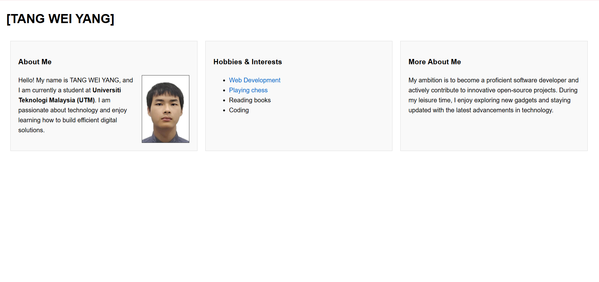
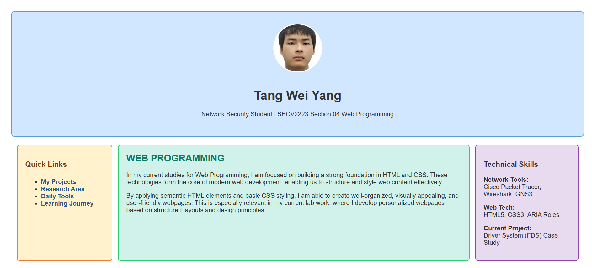

Personal Webpage Design
A fully responsive portfolio built with pure HTML and CSS, focusing on semantic structure and Lighthouse optimization.
Selected Academic and Personal Work

A fully responsive portfolio built with pure HTML and CSS, focusing on semantic structure and Lighthouse optimization.

Analysis of network traffic using Wireshark to identify potential security threats in a local area network environment.